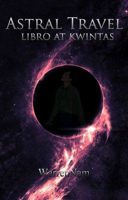

Kabanata II: Trahedya
Pagkatapos ng klase naisipan namin ni Andrew at Kevin na pumunta sa libary. May gagawin silang pananaliksik sa isang major subject nila kaya sinabayan ko na lang sila rito dahil wala naman akong gagawin.
Unang tapak ko pa lang sa library ay agad bumati sa akin ang napaka pamilyar na amoy.
Kaaya-ayang amoy. Pakiramdam ko ay galing ito sa mga lebrong natatamaan ng bentilador.
Sandali akong napatigil nang makita ang kabuuan ng library. Malawak ito gaya noong dinadala ako rito ng aking mga magulang. Kahit ang pagkakalagay ng mga gamit dito ay nasa ganoon pa ring posisyon. Kahit ang silyang tumba-tumba na nakalagay lang sa gilid ng librarian ay nandoon pa rin. Ito yung madalas kong ginagamit habang hinihintay ang aking mga magulang. Minsan kasi ay natatagalan sila rito at kung hahanapin ko naman ay laging hindi ko nakikita. Kaya minsan din akong nagagabiha dito sa paghihintay. Subalit hindi ako nakaramdam ng pagkainip dahil parati akong may kalaro na babae. Hindi naman kami pinapagalitan ng katiwala rito ng aklatan dahil pamangkin ng aking ina noon ang nagbabantay rito. . .
Dahil sa pagmuni-muni ay hindi ko na namalayan na nakaanap na pala kami ng mauupuan at nagsimula na si Kevin sa pagsasaliksik.
Nanatili pa rin akong nakatayo nang bigla akong nakaramdam ng pagod. Napatitig lang ako sa isang makapal na libro habang inaalala kung saan ko iyon nakita. Napagtanto ko na rin na sa isang panaginip ko pala iyon nakita at 'yon ay noong nawalan ako ng malay. Unti-unti na ring rumehistro sa aking isipan ang mga nangyari; mula noong lumabas ako sa klinik matapos makita ang sarili kong katawan na nakahiga hanggang sa sinundan ko ang matandang babae sa library kung saan ako ngayon.
Linapitan ko ang makapal na libro kung saan ako nakatitig. Dahan-dahan ko itong iniangat at nagbakasakaling may mangyari.
Napatalon ako sa gulat nang biglang may humawak sa balikat ko. Nagsitindigan din ang balahibo ko sa batok nang madaplisan ang malamig nitong daliri.
"'Andiyan ka lang pala Scott," pabulong na sabi ni Andrew. Sumalubong ang dalawa niyang kilay. "Uh, parang nakakita ka ng multo diyan, masyado ba kitang nagulat? Kahit ngayon ay napakatakutin mo pa rin," natatawang sabi ni Andrew.
Hindi ko na lang siya pinansin at naglakad na lang ako papunta sa inuupuan ni Kevin. "Andiyan ka na pala," aniya sabay pasok ng gamit niya sa bag.
Tiningnan ko ang orasan sa bandang kanan ng pader kung saan nakaupo ang katiwala ng aklatan. Halos alas singko y medya na kaya siguradong mahihirapan kami ngayon na makasakay ng jeep. Nasanay na rin kaming maglakad pauwi dahil madalas kaming umiwi nang ganitong oras simula pa noong unang sem. Malapit lang naman ang inuupahan namin at mga sampong minuto lang 'yon kung lalakarin.
Habang tinatahak naming magkaibigan ang sementadong daan pauwi ay napahinto ako dahil sa biglaang pananakit ng ulo ko. Parang bibiyak na ito sa matinding pagkirot.
Isinandal ko ang kamay ko sa isang poste nang hindi mawalan ng balanse ngunit napaluhod na lang ako bigla habang marahan na hinihila ang sariling buhok at umaasang mabawasan man lang ang kirot.
Kahit anong pilit kong pagmulat ay kusang pumipikit ito. Biglang may mga eksena ang lumilitaw sa aking isipan, bawat sandali nito ay parang naranasan ko na, isang kagimbal-gimbal na aksidente.
Mga iimpit ng estudyante at dugo ang nakita ko sa loob ng isang tiwarik na school bus; may nawalan ng malay, umiiyak, at nanghihingi ng tulong.
Di kalayuan naman sa school bus, may dalawang tao na naka-hoodie at mask naman ang nakita ko. Pareho silang nagpupumiglas na maka-alis sa kanilang kinahihigaan at unti-unting gumapang sa maliit na eskenita.
Naibsan ang sakit ng ulo ko kaya't itinuloy ko na rin ang aking paglalakad. Habang abala sina Andrew at Kevin sa kanilang cellphone, napansin ni Andrew na hindi ako sumunod kaya napahinto't napatingin siya sa direksyon ko.
"Scott, sigurado ka bang okay ka lang talaga? Kanina ka pa sa school. Bakit may nangyari ba?" malumanay na tanong ni Andrew. Maraming beses ko nang narinig ang katanungang iyan at tango lamang ang tangi kong sinasagot.
"Pagpasensiyahan mo na 'tong si Andrew, Bruh. Hindi kasi nito alam na ngayon ang death anniversary ng mga magulang mo." Simpatyang saad ni Kevin.
"Okay lang. Matagal na 'yon at matagal ko nang tanggap," tugon ko at pinagpatuloy ang paglalakad.
Hindi ko alam kung bakit magpahanggang ngayon ay wala man lang kahit anong luhang mailabas sa mga mata ko o kirot sa aking puso sa tuwing maalala ko ang pagkamatay ng aking mga magulang. Parang matagal ko nang tanggap ang pagkamatay nila. Kahit noong nabubuhay pa sila. Hindi dahil hindi ko sila minahal, lalong hindi dahil hindi nila ako minahal. Ngunit parang...parang may ginawa sila sa puso ko para maging manhid ito. O sadyang ganito lang talaga ako. Ganito na ba ako kasama para hindi maramdaman ang normal na nararamdaman ng tao? O baka naman ampon lang talaga ako. Ayaw kong mag-isip ng ganito pero gusto kong malaman ang dahilan. Dahilan kung bakit binuhay pa ako sa mundong ito.
Nang matanaw na naming magkaibigan sa 'di kalyuan ang tinutuloyan naming apartment, kusang nagsitindigan ang aking balahibo nang makita ko ang dalawang lalaking naka-hoodie at mask na nakasakay sa motor. Hinila nito ang bag ng isang babaeng naghihintay na makatawid sa pedestrian lane dahilan ng pagkawalan nito ng balanse bunsod sa suot nitong sandal. Biglang may isang rumaragasang sasakyan ang paparating sa kaniya at pilit nitong iniwasan ang babae, ngunit sa kasamaang palad-nabanga ito sa poste.
Nang makita kong papunta sa aming direksyon ang motor, agad kong hinanda ang sarili ko at puwenersang inagaw ang bag. Ramdam ko ang mahigpit nitong hawak sa bag kaya lumagpak ang kanilang motor pagkatapos nadaplisan ito ng van at papunta naman ang van sa direksyon ko!
Hindi na ako nakailag pa't nasagasaan din ako nito. . .
Damang-dama ko ang van sa aking buong katawan kasabay ng pagtilapon ko sa isang salamin. Matigas ito kaya napadausdos ako rito. Wala akong naramdaman na kahit anong sakit, pero puro pasa at dugo ang natamo ng aking katawan. . .
Maya-maya pa'y unti-unti ko nang naramdaman ang sakit, at dahil hindi ko na ito matiis bumigay ang aking buong katawan at dumilim ang buong paligid. . .
Pagmulat ng aking mga mata ay agad kong sinubukang bumangon hanggang sa naramdaman ko ang paghiwalay ng aking katawan. Ikatlong beses ko na itong nagagawa. May halong kaba at pagtataka ang nararamdaman ko. Kahit ngayon ay hindi ako makakapaniwala sa aking nasaksihan. Talagang hindi pa ako nababaliw at totoo ang mga nasaksihan ko ngayong araw.
Hindi ko namalayan na unti-unti na pala akong papalayo sa lupa. Nakita ko naman agad ang aking katawan na nakahandusay sa daan. Naibsan naman aking pag-alala nang malamang hindi gaanong masama ang nangyari.
Napatingin ako sa bus kung saan ako tumilapon, nagsilabasan ang nasa loob nito at rinig na rinig ko ang kanilang pasasalamat sa nakahandusay na katawan ko. Dahil kung hindi raw sa akin ay talagang babangga ang van sa sinasakyan nilang bus. Rinig na rinig ko rin ang pag-uusap nila tungkol sa dalawang magnanakaw.
Napatingin naman ako sa direksyon ng magnanakaw. Pilit itong bumangon subalit hindi na nila matiis pa ang iniinda nilang sakit at tuluyan na itong nawalan ng malay. Dumating ang mga ambulansya at pulis hanggang sa unti-unti nang linamon ang aking ulirat.
-
Pagmulat ng mga mata ko ay agad kong nakita ang dalawang silwetang nakatayo sa harapan ng pintuan. Napapikit ako dahil sa nakakasilaw na fluorescent doon. Dahan-dahan kong minulat muli ang mga mata ko at tignan ang buong paligid. Napansin ni Kevin ang pagmulat ko kaya dali-dali niyang ginising si Andrew na nakahiga sa sopa.
"Sa awa naman ng Diyos hindi naman siya nagkaroon ng bali o kaya'y malalalim na sugat. Mabilis din ang kaniyang paggaling kaya bukas na bukas din ay maaari na siyang makalabas," rinig kong saad ng doktor habang papalabas na ng pinto kasama ang aking lola.
"UY Scott, Alam mo bang nasa front page kana ng news? Pero sayang! Pinili kasi nitong itago ang pagkatao mo, at-" pagkamangha't gulat ni Kevin habang papunta siya sa akin ngunit bigla siyang sinapawan ni Andrew at sinabing, "Grabe ka, Scott, may anting-anting ka ba? Tignan mo nga 'yang katawan mo, maliban sa mga pasa at sugat nito ay hindi ka man lang nabalian ng boto kahit na halos kaladkarin ka na ng van!"
"Ilang araw na ba akong nakahiga rito?" Pag-iibang tanong ko habang sinusubukang tumayo.
"Anim na araw," sagot nila.
Alam ni lola na ayaw kong manatili sa ospital kaya sigurado akong inasikaso na niya ang aking paglabas. . .
-
Kasama kong umuwi sina Andrew at Kevin dahil iisang apartment lamang ang aming tinutuluyan. Pagmamay-ari kasi ito ng mga magulang ni Kevin kaya simula noong ikalawang semestro ay dito na kami pansamantalang nanatili. Syempre hindi naman ito libre pero kahit papaano ay may 20 porsyento na diskwento kami rito.
"Scott, kung may kailangan ka, tawagan mo lang ako," sabi ni Andrew sabay bukas ng pinto. Pinaalala rin sa akin ni Kevin na inumin ko raw yung mga gamot ko. Tumango lang ako sa kanila bilang tugon at tuluyan nang pumasok sa kuwarto.
Inilapag ko agad ang duguan kong bag at kaagad na humilata sa malambot na kama. Tinitigan ko lang ang kisame habang binabalik-tanaw ang mga nangyari nitong nagdaang araw. Hindi pa rin ako makapaniwala sa mga nangyari. Mula noong nagising ako sa panaginip kung saan sinaksak ako sa binti ng ama ko hanggang sa aksidenteng nangyari sa akin. Parang isang panaginip lang 'yon at nagising na lang ako sa isang ospital.
Sa aking pagbalik-tanaw ay hindi ko namalayan na nakapikit na pala ako at ganap na nagpapahinga na ang aking buong katawan. Ngunit ang ipinagtataka ko ay gising na gising pa ang aking diwa.
Nakaramdam ako ng kakaibang vibration at pagkamanhid ng aking katawan kaya napa-isip ako na gumolong-gulong at ramdam ko na parang bumibigat lalo ang aking pakiramdam. Paulit-ulit ko itong inisip hanggang sa-katawan ko na mismo ang nahulog.
Pagbangon ko, nakita ko agad ang sarili na nakahiga. Biglang may umilaw sa bag ko kaya binuksan ko ito't agad na bumungad sa akin ang libro. Kinuha ko ang libro at akmang bubuklatin ko ito ngunit kusang bumukas ito at bumubuo ng iba't ibang imahe pero hindi ko ito gaanong naiintindihan.
Ang naiintindihan ko lang ay ang mga katagang:
"Ang pagpasok sa ibang katawan, ay paraan upang makilala ang tao ng lubusan"
Lumabas ako agad sa kwarto at dinala na lang ako ng mga paa ko papunta sa kwarto ni Keven. Akala kong babanga ako sa pader ngunit laking gulat ko na lang na tumagos ang aking katawan.
Nakita kong nakahilata si keven at umupo ako agad sa kanyang hinihigaan. Hindi ko alam kung ano ang ginagawa ko ngunit parang gusto kong subukang humilata sa mismong katawan niya.
Nang magawa ko na nga iyon ay biglang nagblanko ang lahat. . .
Pagmulat ng aking mga mata, bumungad sa akin ang tuktok ng isang napakatayog na gusali. Maraming tao ang nagtipon-tipon dito at naka-ngiting tinititigan ang makukulay na fireworks. Karamihan sa kanila ay abala sa pagkukuha ng litrato at ang iba naman ay masayang binabati ang bagong kasal. Bigla kong napagtanto na kasal pala ito ng mga magulang ni Kevin noon, at nasa loob ako ng panaginip niya. . .
Gaya nga ng ikweninto ni Keven noon ay biglang yumanig ang gusali Nataranta ng husto ang lahat. Nagsisigawan sa takot at mabilis na nagsibabaan ang ilan sa masikip na hagdan. Kitang-kita ko rito ang pagdarasal ng karamihan.
Naagaw naman bigla ang atensyon ko sa dalawang magkasintahan. Si kevin at ang kasinthan niya. Habang magkasabay kasi itong naglalakad ay biglang nawalan ng balanse ang kasintahan ni Keven at bunsod ng suot nitong sandal ay nahulog ito sa gilid ng building ngunit hawakan pa rin siya ni Kevin.
Buong lakas niya itong iniangat ngunit hindi kinaya ng lakas niya. Mangiyak-ngiyak na sa takot si samamtha at tuloyan nang nawalan ng pag-asa.
Sa aking paggising malumanay akong bumangon. Tinignan ko ang oras at mag-aalas sais na. Sigurado akong nakabihis na sina Andrew at Kevin sa ganitong oras kaya nagmadali akong nag-ayos at naggayak papuntang paaralan.
Habang naglalakad kaming magkaibigan ay napansin kong tahimik lang si Kevin at napakalalim ng iniisip. Alam kong magpahanggang ngayon ay hindi pa rin niya lubusang natatanggap ang pagkawalay ng dati niyang kasintahan.
Hindi ko na lang siya kinausap dahil wala rin naman akong magandang maipapayo sa kaniya. Siguro hindi naman masama ang pagbalik-tanaw sa mga ala-ala na kasama mo pa ang iyong pinakamamahal sa buhay. Kahit papaano ay naging parti ka sa buhay nila at naging parti rin sila sa iyo. Siguro 'yon ang dahilan kung bakit madali kong natanggap ang pagkamatay ng aking mga magulang. Dahil madali kong tinanggap na hindi ko na sila maibabalik pa at kahit papaano ay naging parti ako sa buhay nila at naging parti rin sila sa akin.
-
Pagdating namin sa paaralan ay agad kaming nagtungo sa classroom. Gayon pa rin ang kapaligiran, mapurol at walang kabuhay-buhay. Math ang unang subject ngayon kaya sigurado akong aantukin na naman ako nito.
Pagbukas ko sa pintuan umupo agad ako sa pwesto ko malapit sa bintana.
Habang nagtuturo ang aming guro ay napatingin ako bigla sa labas.
Parang mas makabuluhan pa yata itong pagtitig ko sa watawat kaysa sa pakikinig ng itinuturo ng aming guro. Paano naman kasi, mas malakas pa itong ugong ng aircon sa likuran ko kaysa sa kaniyang boses. Ayan tuloy naisipan ko biglang pagalawin ang watawat.
Wala rin namang mawawala kapag susubukan ko ito.
Sa dinami-raming kababalaghang nararanasan ko sa mga nagdaang araw ay pakiramdam ko naman na kayang-kaya ko itong kontrolin.
Gamit ang aking isipan iwinawagayway ko ito patungo sa direksyong gusto ko. Hindi ko alam kung nako-kontrol ko talaga ito o sadyang nagkataon lang. Napangiti ako sa sobrang saya, dahil unti-unti ko na itong nako-kontrol! ngunit habang pinaglalaruan ko ito biglang may bumato sa akin ng chalk-
Aray!
"Mr. William! Maaari ko bang malaman kung bakit ka ngumingiti r'yan? ikaw ba'y nasisiraan na ng ulo? kaya't imbes na makinig ay ngumingiti ka nalang mag-isa!" malakas na tili ni Ma'am Milture at umalingaw-ngaw ito sa buong silid. Biglang tumahimik ang kaklase ko at palihim na humalakhak. Pagtingin ko sa labas, nahagilap ko ang bell.
"Wa-wa-la po Ma'am," nauutal kong sagot. Akmang sisigawan ulit niya ako nang biglang tumunog ang bell.
May tatlong minuto pa bago mag-snack pero tumunog na 'yong bell. Hindi ko alam kung nagka-taon din ito o napapagalaw ko talaga ang mga bagay-bagay.
- Kabanata I
- Kabanata II
- Kabanata III
- Kabanata IV
- Kabanata V
- Kabanta VI
- Kabanata VII
- Kabanata VIII
- Kabanata IX
- Kabanata X
- Day 1
- Day 2
- Day 3
- Day 4
- Day 5
- Day 6
- Day 7
- Day 8
- Day 9
- Day 10
- Day 11
- Day 12
- Day 13
- Day 14
- Day 15
- Day 16
- Day 17
- Day 18
- Day 19
- Day 20
- Sana
- Elastiko
- Pagkamuhi
- Bulalakaw
- Tadhana o Paghanga
- Kalikasan
- Takbo ng Panahon
- Ulan
- Sufokante
- ❮
- ❯
-
October
2019
- Su
- Mo
- Tu
- We
- Th
- Fr
- Sa
- 1
- 2
- 3
- 4
- 5
- 6
- 7
- 8
- 9
- 10
- 11
- 12
- 13
- 14
- 15
- 16
- 17
- 18
- 19
- 20
- 21
- 22
- 23
- 24
- 25
- 26
- 27
- 28
- 29
- 30
- 31
- ❮
- ❯
-
November
2019
- Su
- Mo
- Tu
- We
- Th
- Fr
- Sa
- 1
- 2
- 3
- 4
- 5
- 6
- 7
- 8
- 9
- 10
- 11
- 12
- 13
- 14
- 15
- 16
- 17
- 18
- 19
- 20
- 21
- 22
- 23
- 24
- 25
- 26
- 27
- 28
- 29
- 30
- 31
- ❮
- ❯
-
December
2019
- Su
- Mo
- Tu
- We
- Th
- Fr
- Sa
- 1
- 2
- 3
- 4
- 5
- 6
- 7
- 8
- 9
- 10
- 11
- 12
- 13
- 14
- 15
- 16
- 17
- 18
- 19
- 20
- 21
- 22
- 23
- 24
- 25
- 26
- 27
- 28
- 29
- 30
- 31
Stories
1 Published Story
Astral Travel
Ang mga magulang ni Scott ay isa sa tinatawag na "Astral Traveler." Sila ay may kakayahang makalabas mula sa kanilang pisikal na katawan at largadong nakapaglalakbay sa lugar na tinatawag na "Astral Plane."
Ngunit dahil sa aksidenteng nangyari dulot ng mga masasamang nilalang ay binawian sila ng buhay at sa kaarawan mismo ng kanilang anak. Dahil dito ay hindi na nila nagawa pang ibigay ang regalo nilang Libro at kwintas.
Published at Wattpad
Diary
1 Published Diary

Astral Travel
Ang mga magulang ni Scott ay isa sa tinatawag na "Astral Traveler." Sila ay may kakayahang makalabas mula sa kanilang pisikal na katawan at largadong nakapaglalakbay sa lugar na tinatawag na "Astral Plane."
Ngunit dahil sa aksidenteng nangyari dulot ng mga masasamang nilalang ay binawian sila ng buhay at sa kaarawan mismo ng kanilang anak. Dahil dito ay hindi na nila nagawa pang ibigay ang regalo nilang Libro at kwintas.
Published at Wattpad
Poems
1 Published Poems

Tula ng aking buhay
Mga koleksyon ng mga nagawa kong tula noong ako ay highschool pa. Karamihan sa tulang ito ay nabuo dahil sa kagustuhang makalimot. Kagustohang makalimot sa realidad kahit pansamantala, kagustohang makalimot sa mga taong kinaiinisan kahit wala silang ginawa, kagustohang bumuo ng panibagong mundo kung saan malaya akong nakakahinga.
Published at Wattpad